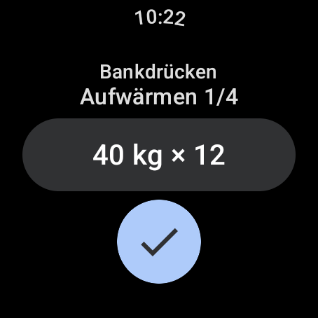
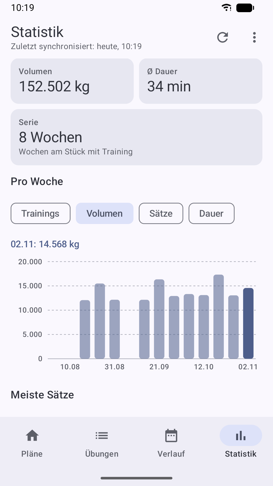
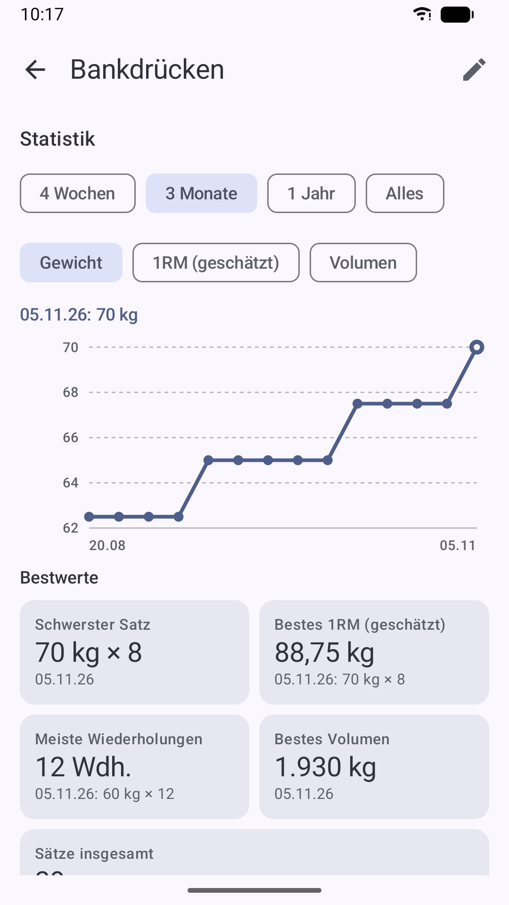
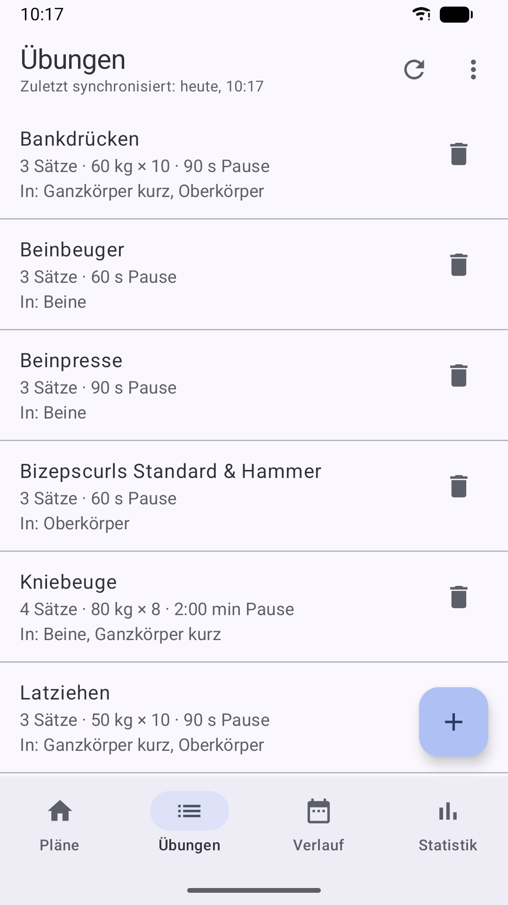
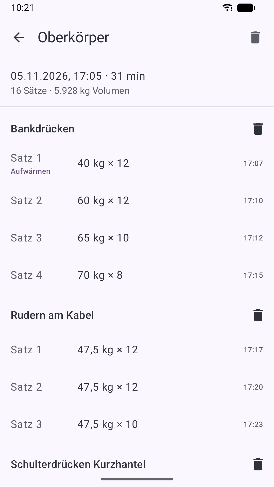
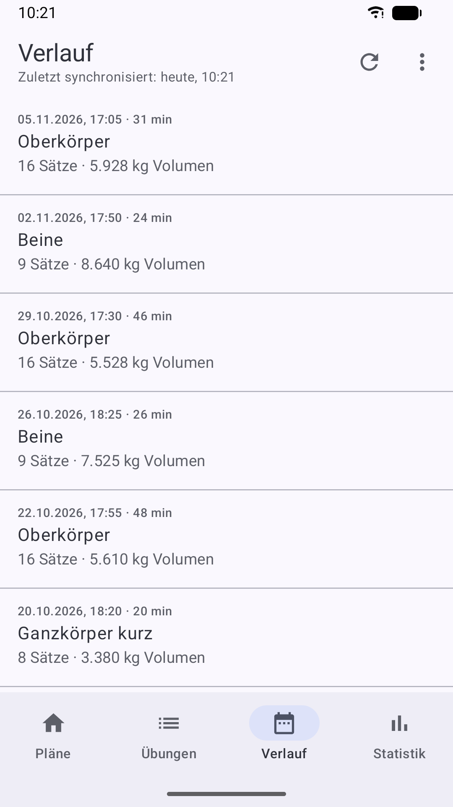

Le déroulé d’une séance
À la salle, il te suffit de ta montre, ou de ton téléphone si tu n’as pas de montre. De grands boutons et des vibrations au lieu du son, pour que ça marche même avec les doigts en sueur.
Choisir un programme
Démarrer directement sur le téléphone ou sur la montre : les programmes viennent du téléphone, ensuite tout fonctionne sans connexion.
Valider la série
Le poids et les répétitions sont déjà indiqués. Un seul toucher suffit, et tu peux aussi les modifier.
Le repos démarre
Le minuteur démarre tout seul et vibre peu avant et à la fin du repos.
La suite du programme
Après la dernière série vient l’exercice suivant. À la fin, la séance est enregistrée.
Fonctions
Tu peux t’entraîner sur la montre ou sur le téléphone, et tu retrouves programmes, historique et statistiques sur le téléphone. Avec une montre, les deux se synchronisent automatiquement dès qu’ils sont connectés.
Sur la montre
- Le poids et les répétitions de chaque série viennent directement de ton programme
- Un toucher valide la série, avec de grands boutons
- Changer le poids par pas de 2,5 kg ou le régler précisément à 0,25 kg près avec une molette
- Le minuteur de repos continue écran éteint, avec un avertissement 10 secondes avant la fin et une vibration puissante
- Pendant la pause, vous voyez l’exercice suivant avec la série et le poids
- Par programme : continuer automatiquement ou laisser le repos compter jusqu’à ce que tu touches « Suivant »
- Ajouter ou sauter des séries pendant la séance
- Les séries d’échauffement sont signalées comme telles sur la montre
- Une séance en cours ne se termine jamais par erreur : en lançant un autre programme, tu choisis entre continuer et recommencer
- Fonctionne à la salle sans téléphone et sans internet
Sur le téléphone
- S’entraîner aussi sans montre : valider les séries sur le téléphone, avec minuteur de repos, vibration et décompte dans la notification
- Annonces vocales en option pendant l’entraînement sur le téléphone : fin de la pause, exercice suivant, note de l’exercice et fin de la séance
- Créer des exercices et des programmes et définir leur ordre
- Valeurs par défaut par exercice pour les séries, le poids, les répétitions et le repos, avec la liste des programmes où il figure
- Séries, poids, répétitions et repos, si tu veux pour chaque série séparément (p. ex. entraînement pyramidal), certaines séries marquées comme échauffement
- Au choix, le programme reprend après la séance les poids réellement soulevés
- Ajouter à la séance en cours des exercices d’autres programmes
- Notes sur les programmes et les exercices, photos et vidéos pour la bonne exécution
- Statistiques : séances, volume, séries et durée par semaine ou par mois, et ta série de semaines d’entraînement
- Par exercice : progression du poids, du 1RM estimé et du volume, tes records et un message en cas de nouveau record
- Les séries d’échauffement ne comptent ni dans le volume ni dans les records
- Historique de toutes les séances avec date et heure ; corriger ou supprimer des séries après coup, et aussi des exercices ou des séances entières
- Reprendre une séance depuis l’historique, même une séance de la montre, par exemple si sa batterie est vide
- Synchronisation avec la montre d’un toucher, avec l’heure de la dernière synchronisation
- Sauvegarde dans un fichier, partage de programmes avec des amis, historique en CSV pour Excel
Captures d’écran de la montre (version allemande)





Captures d’écran du téléphone (version allemande)












Le minuteur de repos en vidéo
Valider la série, le repos démarre, la montre vibre quand il faut reprendre. Voilà à quoi ça ressemble au poignet.
▶ Voir sur YouTubeBon à savoir
Tes données restent chez toi
Pas de publicité, pas de compte, pas d’inscription. Tes données d’entraînement sont stockées uniquement sur ta montre et ton téléphone. Détails dans la politique de confidentialité.
Configuration requise
- Téléphone Android à partir d’Android 10
- En option : montre connectée sous Wear OS 3 ou plus récent, p. ex. Samsung Galaxy Watch4 et plus récentes
- Avec une montre : elle a besoin une fois de la connexion au téléphone, ensuite tu t’entraînes sans
- Poids en kilogrammes
- Application en français, allemand ou anglais, selon la langue de l’appareil